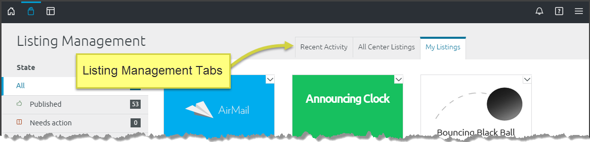
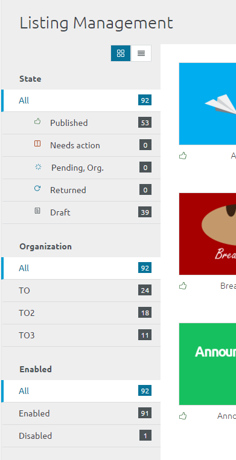

Center stewards can see every listing in their organization from their Listing Management page. To access this page, click the drop-down Main Menu on the right side of the Global Toolbar and select Listing Management:
As a Center steward, the Listing Management page displays information about listings you own and listings you oversee. For user instructions about the Listing Management page see the User View: Listing Management Page.

As a Center steward, you see multiple tabs on the Listing Management screen:
|  |
The left-side State panel provides slightly different information than a user’s or org steward's left-side panel: State
Organization Center stewards can filter by organization. Enabled All stewards see the Enabled section which allows them to filter by Enabled and Disabled listings (For information about Enabled and Disabled listings see Center Steward: Enable/Disable a Listing. |